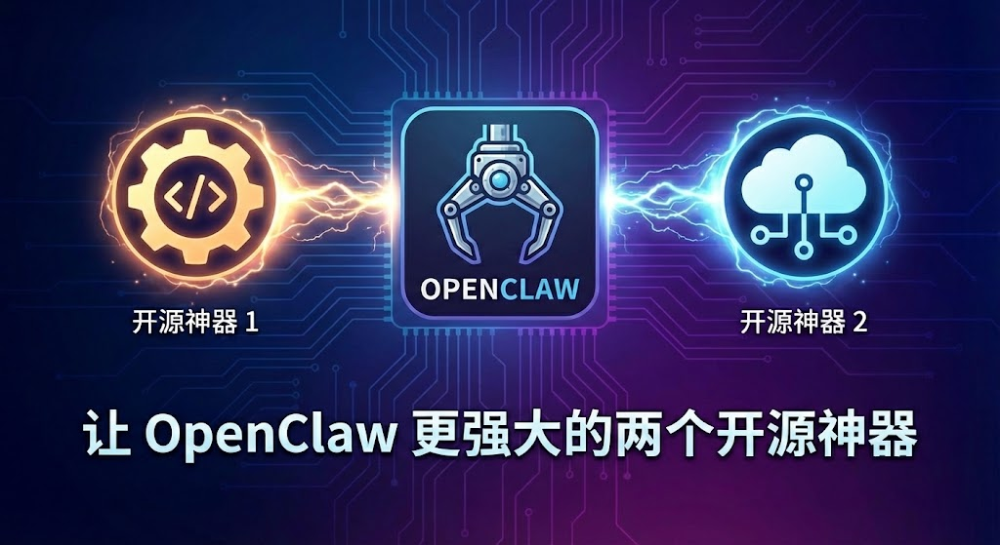
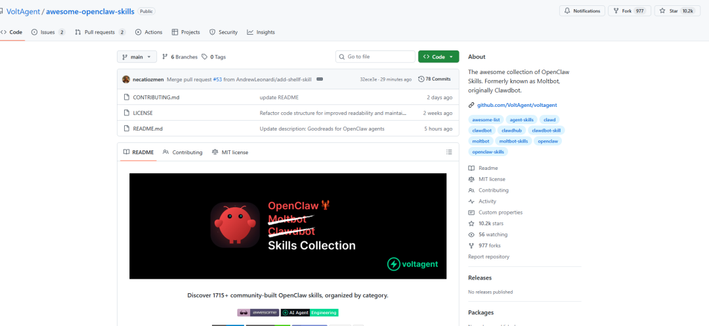
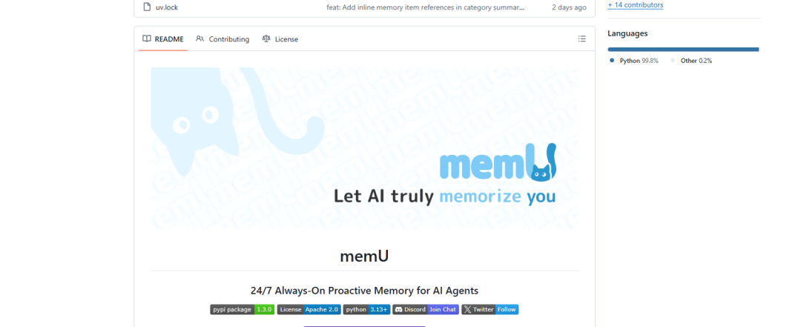

作为独立开发者，我一直在用 OpenClaw 作为我的 AI 助手。说实话，刚开始我只是把它当成一个"高级聊天工具"——直到我发现了这两个开源库。
今天分享两个让 OpenClaw 能力暴涨的开源项目，都是社区驱动的，免费使用。

一、Awesome OpenClaw Skills：1715+ 现成技能库
GitHub: VoltAgent/awesome-openclaw-skills
Stars: 10.2k ⭐

这是什么？
简单说，这是一个技能市场。
OpenClaw 本身很强，但它的能力边界是由"技能"决定的。比如：
想让它操作 GitHub？需要 GitHub Skill 想让它发 Telegram 消息？需要 Telegram Skill 想让它查天气？需要 Weather Skill
这个库收录了社区贡献的 1715+ 技能，按场景分类整理。
为什么推荐？
1. 省时间
我之前想让 OpenClaw 帮我管理 Vercel 部署，自己写 Skill 花了两小时。后来发现这个库里早就有现成的——5 分钟装好，直接用。
2. 场景覆盖全
随便列几个分类：
- 开发工具
：GitHub、Docker、SSH、PM2、Tailscale - 内容创作
：小红书发布、公众号、Twitter/X - 数据分析
：GA4、Search Console - 自动化
：n8n、浏览器自动化 - AI 扩展
：Perplexity 搜索、ElevenLabs TTS
基本上你能想到的场景，都有人做过了。
3. 学习参考
就算你要自己写 Skill，这些现成的也是最好的模板。看看别人怎么处理 API 调用、怎么设计 prompt、怎么做错误处理。
怎么用？
最简单的方式：
去 clawhub.com 浏览技能 找到想要的，复制到本地 skills 目录 重启 OpenClaw
或者直接在 OpenClaw 里问："帮我装一个 xxx 技能"——它会自己去找。
二、memU：从"手动记忆"到"自动记忆"
GitHub: NevaMind-AI/memU
Stars: 8k ⭐
版本: 刚发布 1.4.0

先说清楚：OpenClaw 本身就有记忆
没错，OpenClaw 自带记忆系统：
MEMORY.md— 长期记忆（手动维护） memory/*.md— 每日记录
这套系统挺好用的，但有个问题：需要你或 AI 主动写入。
我用了一段时间发现：
有时候忘了记录重要信息 AI 提取的内容质量参差不齐 记忆多了之后，找起来费劲
memU 解决的是什么？
一句话：从手动记忆升级到自动记忆。
简单说：原生记忆是"记事本"，memU 是"智能知识库"。
核心能力
记忆结构像文件系统
memU 把记忆当成文件系统来管理：
├── preferences/ # 你的偏好
│ ├── communication_style.md
│ └── topic_interests.md
├── relationships/ # 关系网络
│ └── contacts/
├── knowledge/ # 知识积累
│ └── domain_expertise/
└── context/ # 上下文
└── recent_conversations/
这意味着记忆是结构化、可检索、可迁移的。
为什么推荐？
1. 解放维护成本
用原生记忆，我得时不时检查 MEMORY.md 是不是过时了、有没有遗漏重要信息。用 memU，这些都自动化了。我只管对话，它自己提取、分类、更新。
2. 语义检索比全文加载高效
原生记忆的问题是：MEMORY.md 越写越长，每次都要全部加载进上下文。memU 用向量检索，只拉取跟当前对话相关的记忆片段。记忆再多，Token 消耗也可控。
3. 主动式 Agent 的基础
想象一下这个场景：
你正在写代码，遇到一个 Bug。memU 记得你上周也遇到过类似问题，并且知道你当时是怎么解决的。它主动提醒你："这个问题上周也出现过，当时你用 xxx 方法解决的，要不要试试？"
这就是主动式 AI 的雏形。不是你问它答，而是它主动帮你。
4. 两套系统可以共存
memU 不是要替代原生记忆，而是补充。你可以：
用原生 MEMORY.md 存核心信息（身份、项目、偏好） 用 memU 自动捕捉日常对话中的细节
两者结合，效果更好。
怎么用？
memU 提供两种方式：
云端版本（开箱即用）:
网址：memu.so API 直接调用
自托管（更灵活）:
export OPENAI_API_KEY=your_key
python test_inmemory.py
它支持多种 LLM（OpenAI、Claude、Qwen、OpenRouter 等）和多种存储后端（PostgreSQL、内存等）。
对 OpenClaw 用户的实际意义
这两个项目解决的是 AI Agent 的两个核心问题：
| 能力边界 | |
| 记忆管理 |
对于我这种每天用 OpenClaw 工作的人来说：
Skills 让我能快速接入各种服务 memU 让 AI 真正"认识"我
两者结合，OpenClaw 从"工具"变成了"助手"。
写在最后
开源社区的力量真的很强大。
这两个项目都是社区驱动的，免费开源。一个解决能力问题，一个解决记忆问题——刚好补上了 AI Agent 最需要的两块拼图。
如果你也在用 OpenClaw（或者任何长期运行的 AI Agent），强烈推荐试试：
Awesome OpenClaw Skills
github.com/VoltAgent/awesome-openclaw-skills
memU
github.com/NevaMind-AI/memU
有问题可以在评论区交流。
觉得有用？点个「在看」，让更多人看到。